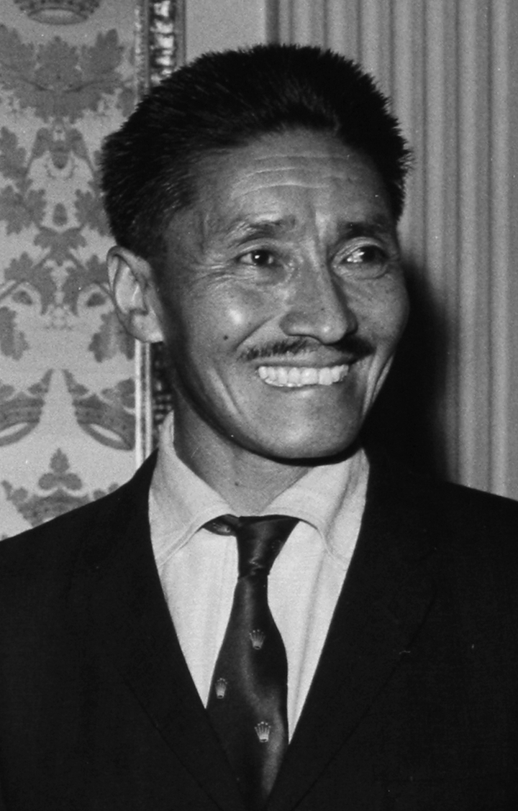
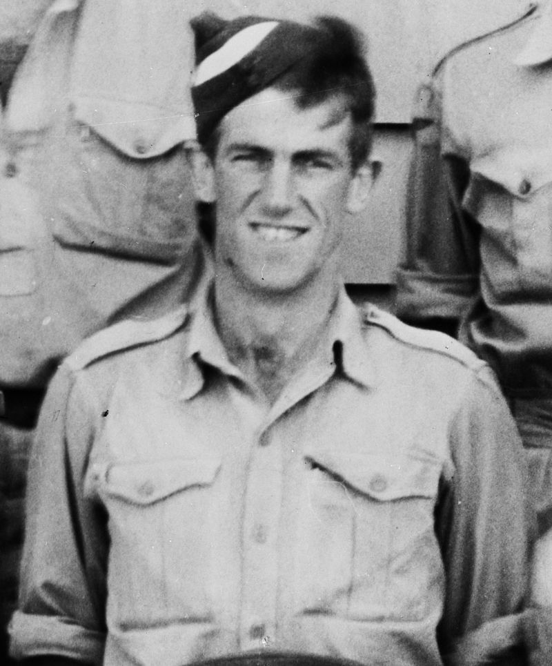

By today's standards, the 1953 British expedition, under the military-style leadership of Sir John Hunt, was massive in the extreme, but in an oddly bottom-heavy way: 350 porters, 20 Sherpas, and tons of supplies to support a vanguard of only ten climbers. "Our climbers were all chosen as potential summiters," recalls George Band, 73, who was one of the party. Fifty years later, Band's memory of the campaign remains undimmed. "The basic plan was for two summit attempts, each by a pair of climbers, with a possible third assault if necessary. On such expeditions the leader tends to designate the summit pairs quite late during the expedition, when he sees how everybody is performing." Anxiety over who is chosen for the summit team would be a hallmark of major Everest expeditions for decades to come. But never again would the stakes be quite so high.
By the spring of 1953, the ascent of the world's highest mountain was beginning to seem inevitable. First attempted in 1921 by the British, Everest had repulsed at least ten major expeditions and two lunatic solo attempts. With the 1950 discovery of a southern approach to the mountain in newly opened Nepal, and the first ascent of the treacherous Khumbu Icefall the following year, what would come to be known by the 1990s as the "yellow brick road" to the summit had been identified.
At first it seemed the Swiss would claim the prize. In 1952 a strong Swiss team that included legendary alpinist Raymond Lambert had pioneered the route up the steep Lhotse Face and reached the South Col. From that high, broad saddle, Lambert and Sherpa Tenzing Norgay then pushed all the way to 28,210 feet (8,598 meters) on the Southeast Ridge before turning back—probably as high as anyone had ever stood on Earth.
Now the British were determined to bring every possible advantage to their spring 1953 offensive—including hiring Tenzing, 38, as their lead Sherpa, or sirdar. Earlier British expeditions, though impressive in their accomplishments, were often charmingly informal in style. Hunt's intricately planned assault, on the other hand, was all business. "You get there fastest with the mostest," observes mountaineering pundit Ken Wilson. "You have a military leader who is totally in tune with that philosophy, and you don't dink around in an amateur sort of clubby way."
From the start, the 33-year-old beekeeper Edmund Hillary (not yet Sir Edmund) was a strong contender for one of the summit slots. "It was his fourth Himalayan expedition in just over two years and he was at the peak of fitness," Band says. The heavily glaciated peaks of his native New Zealand had proved a perfect training ground for the Himalaya. Hillary earned respect early in the expedition by leading the team that forced a route through the Khumbu Icefall. "A sleeves-rolled-up, get-things-done man," Wilson calls him.
Still, logistical snafus, the failure of a number of stalwarts to acclimatize, and problems with some of the experimental oxygen sets stalled the expedition badly. The team took a troubling 12 days to retrace the Swiss route on the Lhotse Face (in part, perhaps, because the British were not as experienced on difficult ice). In despair, Hunt began to wonder whether his party would even reach the South Col.
The expedition finally gained the col—the vital staging area for a summit push—on May 21. This was late enough to be worrisome, for the monsoon, whose heavy snows would prohibit climbing, could arrive as early as June 1.
Because they became the first men to reach the summit of Everest, Hillary and Tenzing would earn a celebrity that has scarcely faded in 50 years. Who today remembers Tom Bourdillon and Charles Evans? Yet Hunt's plan called for Bourdillon, a former president of the Oxford Mountaineering Club, and Evans, a brain surgeon, to make the first summit bid.
Despite a relatively late start and problems with Evans's oxygen set, Bourdillon and Evans crested the South Summit—at 28,700 feet (8,748 meters), only 330 feet (101 meters) short of the top—by 1 p.m. on May 26. But Evans was exhausted, and both men knew they would run out of oxygen if they went on. They agreed to turn back. Says Michael Westmacott, Bourdillon's closest friend on the 1953 team: "It was a decision Tom always regretted."
So it was that three days later Hillary and Tenzing set out for the top. Their pairing was hardly an accident. "It had always been Hunt's intention, if feasible, to include a Sherpa in one of the summit teams, as a way of recognizing their invaluable contribution to the success of these expeditions," Band says. "Tenzing had already proved he had summit potential by his performance the previous year with Lambert.
In fact, he had been at least 4,000 feet (1,219 meters) higher than any of us!" Indeed, Tenzing (who died in 1986) was the most experienced Everest veteran alive, having participated in six previous attempts on the mountain dating all the way back to 1935. (To those who criticize the practice of leading paying clients on Everest, Himalayan Experience founder and longtime Everest guide Russell Brice has a barbed, half-joking response: "You know who the first guided client on Everest was? Ed Hillary.")